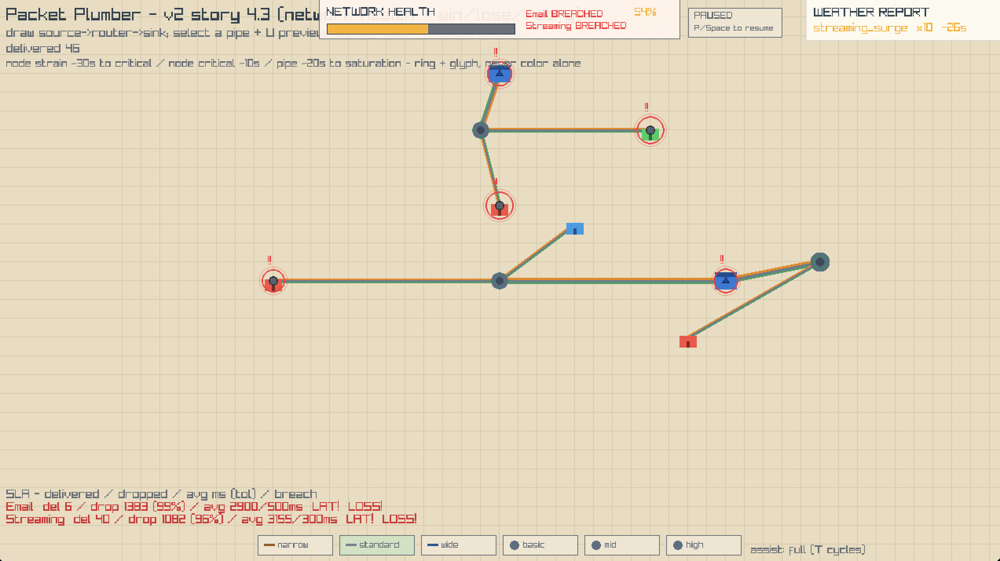
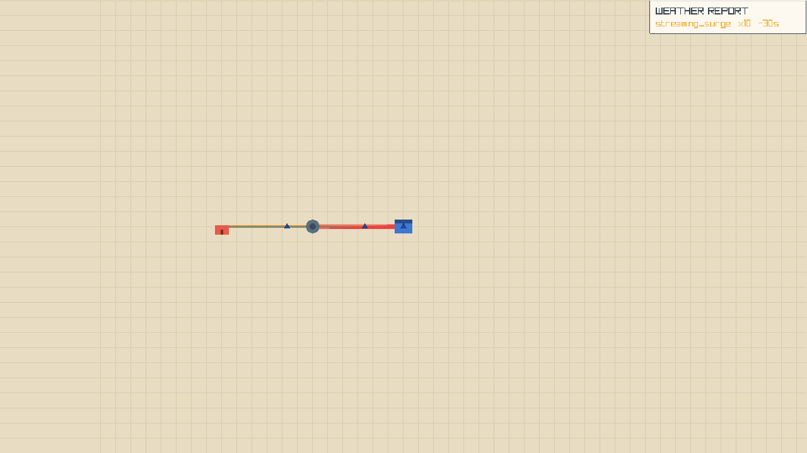
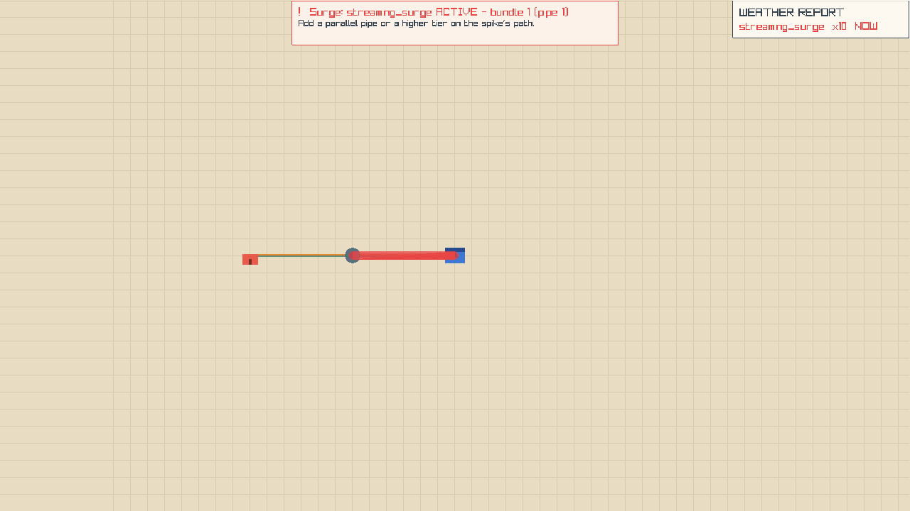

This is the screenshot you asked about, annotated with what each visible surface means. The six questions are answered inline below it.

streaming_surge x10 -26s. Health card top-center: NETWORK HEALTH, both classes BREACHED. Bottom-left SLA gauges: Email del 6 / drop 1983 (99%) · Streaming del 40 / drop 1082 (95%), both LAT! LOSS!. Map: mostly-green links, a few orange pressure halos, red rings + exclamation glyphs on stressed nodes.! = node strained (≥70% load), red ring + !! = critical (≥90%). Load = stuck-packet backlog ÷ router throughput. Ring + glyph + pulse, deliberately never color alone.→ A5 · the telegraphFLAG_WINDOW_RESIZABLE; v2's InitWindow(1280,720) sets no flags. The view already re-fits on resize — the flag is missing and the HUD anchors are hardcoded to 1280×720.→ D2 · resizeWhat actually happened in your run, from the demand schedule to the drop sites to the rings. Each mechanism cites the exact code that implements it.
The streaming_surge set-piece is a scripted demand event, not a simulation emergent: era 3's demand catalog multiplies streaming spawn volume by ×10 for a fixed window. data/demand.json · era 3 set_pieces
The forecast window opens at tick 600 (30 s before start) and the weather panel counts down — streaming_surge x10 -26s means starts in 26 seconds. The panel switches to NOW once it fires. app/render/forecast.odin · draw_forecast_panel core/warnings.odin:144 · forecast pass
In the shipped surge demo the same pattern is golden-verified: an unprepared narrow path saturates under base streaming demand, and the crisis engine names the saturated bundle the moment the surge opens. demos/surge.dem goldens/_reports/surge

streaming_surge x10 -30s — same countdown state as your screenshot, no banner yet.
!! Surge: streaming_surge ACTIVE - bundle 1 (pipe 1) + the preventive-redesign hint. That banner is the 4.2 crisis engine naming the exact bottleneck. app/render/crisis.odin:27Packets are dropped at admission, before or instead of being served by the pipes. There are exactly two drop sites in the sim, and both are invisible in-game.
The sim keeps a global cap on in-flight packets: 512. When the pool is full, the next spawn attempt engages a drop ladder over the whole map — it evicts the newest packet of the lowest-priority non-empty lane, scanning Best-effort → Standard → Express. If the arriving packet's own lane is the lowest-priority candidate present, the arrival drops itself (the inversion guard: an Express resident never pays for a Standard arrival). Drops are tagged Pool_Exhaustion and carry no bundle — they are map-wide by construction. core/flow.odin:476 · flow_try_spawn
data/balance.json · pool_max_packets = 512 core/flow.odin:496,506 · shed + self-drop
Each bundle (a parallel-pipe pair = one pooled link) keeps three lane queues — Express / Standard / Best-effort, one per packet class's lane. A lane is bounded at 6 packets. When a packet tries to forward onto a full lane, the same ladder sheds: the newest packet of the lowest-priority non-empty lane; if that lane is the arrival's own, the arrival drops itself (Queue_Overflow). This is the choke your screenshot's saturated bundle was running. core/flow.odin:710-730 · E9 admission shed core/flow.odin:328,357 · queue counts + newest search
Buffer, not speed — the common misconception: three lanes × 6 = 18 packets can be waiting at one bundle. But the number that crosses per tick is the pipe's bandwidth ÷ 30, and a single non-empty lane already gets the full capacity (work-conserving gap-fill — an empty lane's share flows to the ready one). So splitting traffic across more lanes adds queue depth + priority order, not speed. Throughput per tick only rises with capacity: parallel pipes (bundle = sum) or a higher tier — Section B. core/qos.odin · qos_serialize (gap-fill)
What "ladder" means: when a queue or the pool is full, the game picks who gets shed (dropped) by an ordered list — the drop ladder. It is ordered by lane priority, not by class: a packet in the lowest-priority lane pays first, a packet in the highest lane pays last. "Shed" is the game's word for "evict/drop a packet". At both chokepoints the same ladder runs; the only difference is what is full (the whole map's pool vs one bundle's lane queue).
Where the word comes from: the project's own design docs, not networking terminology — the architecture doc's E9 row calls it the "full drop-priority ladder (Best-effort → Standard → Express, next victim only once the lower is exhausted)" and the 3.3 story spec ships "contention drop ladder". The analogy is a ladder's rungs: the shed rule starts at the bottom rung (Best-effort) and only climbs when that rung is empty. Networking would call it drop precedence (RFC 2597 AF), tail drop, or a scheduling priority — the game just borrowed the ladder picture. The project also uses "ladder" for other ordered tables (the QoS auto-reserve rows [100]/[70,30]/[50,30,20] and the pipe-tier cost ladder 20/10/5). _bmad-output/planning-artifacts/architecture/architecture-v1.md · E9 row stories-v2.md · Story 3.3
core/flow.odin:478-513 · pool ladder core/flow.odin:718-733 · queue ladder core/types.odin:38-41 · lane constants
The honest answer, traced through the code, has three parts — and none of them is "email is the lowest class":
default_lane: 1 on both), so at defaults the ladder treats email and streaming identically. data/packet_types.json · email + streaming entriespacket_bandwidth = 30 units per hop — streaming's catalog bandwidth_demand: 2 is loaded but not yet consumed by the service path (it is a "per-edge service multiplier" that slice 3.3/3.4 was supposed to consume; the flow still uses the flat base). core/catalog.odin:455 · bandwidth_demand loaded core/flow.odin:405 · serve_bundle_lane uses packet_bandwidthOne more asymmetry worth having exactly right: streaming's SLA contract is stricter — 10 % max loss vs email's 30 %, 300 ms vs 500 ms latency, and its health drain is 2× faster. So streaming can be the first to show BREACHED even while email's raw loss percentage is higher. Both being breached in your screenshot means both were deep past their tolerances. data/packet_types.json · max_loss_pct / latency_tol_ms / health_drain_pct_per_tick
The rings are the game's strain telegraph, computed every tick from the flow, not cosmetic animation:
!!!core/warnings.odin:144-214 · strain compute + levels core/flow.odin:704 · waiting_ticks counted on failed forward app/render/view.odin:349 · draw_health_ring data/balance.json · warnings block (amber 70 / red 90)
Your screenshot's red-!! buildings are nodes whose stuck backlog exceeded 90 % of their throughput — packets piling up at a node faster than its router can forward them (residential throughput is only 5 u/s; content hosts 80; routers 40/80/160). The ring draws on any node, building or router, whenever its level is non-None. data/node_types.json · throughput_units
A teaching sim, faithful to the two drop rules above (integer units, same ladders, same bounds), single bottleneck for clarity — no routing/ECMP. Crank the demand, watch the pool fill, flip email into Best-effort and watch the ladder shed it first, then add capacity and watch the drops stop.
Only routers and links exist in the player's hands. Here is every lever the code actually exposes, what it changes numerically, and which move is first for this screenshot. No designed playbook — just the machine's responses.
u/s is how many it provides per second (the sim ticks at 20 Hz, so u/s = u per tick). Transit time per hop = ceil(30 ÷ capacity): narrow (5 u/s) = 6 ticks (0.3 s), standard (15) = 2 ticks (0.1 s), wide (40) = 1 tick. data/balance.json · packet_bandwidth data/pipe_tiers.json · capacity_units = "u/s throughput"Why 30 u/hop today: the 30 is a balance constant — the amount of service one packet needs to cross one edge (each tick a pipe serves its capacity to the queue front; at 30 the packet arrives). The "today" caveat: streaming's catalog has bandwidth_demand: 2 (a "per-edge service multiplier") but the flow's service pass does not consume it yet, so every packet currently costs the same 30 u/hop; when wired, streaming becomes 60 u/hop (2× slower per edge) — the Godot prototype did consume per-class sizes (email 1, streaming 2); the v2 port flattened it. core/flow.odin:405 core/catalog.odin:455 prototype-ref/core/flow.odin:459
Real-world scale, worked — the math you asked for: set 1 u = one 1500-byte frame's transit work (1 packet = 1 u per hop; a 9500-B jumbo stream = 7 u). Gbps → packets/sec → u/tick at 20 Hz: 1 G = 83,333 pps = 4,167 u/tick · 40 G = 3.33 M pps = 166,667 · 100 G = 8.33 M pps = 416,667 — ratios 1 : 40 : 100, your FTTH ladder. The 512-pool survives: 512 packets ≈ 768 KB ≈ 6 ms of 1-Gbps line rate — that's real-router buffer scale (it is a packet count, independent of the unit scale). The catch: with real ratios and real packet sizes, today's demand (6–24 packets/tick ≈ 1.4–5.8 Mbps aggregate) is 100–1,000× below a single 1-Gbps link — nothing would ever congest. The current sim is playable because its tiers (5/15/40 u/s) compress the ratio scale ~1,000× and the demand saturates them.
Your design — narrow as residential access (scaled down, not Gbps-literal): the right shape is real layering: narrow = the last-mile drop to a residential, sized so ONE subscriber's traffic never congests it (real FTTH: your 1-G drop doesn't congest from your own streaming; congestion lives where many subscribers share a link). Concretely: narrow ≈ 8–10 u/s (0.27–0.33 packets/tick per edge) and a residential emitting ~0.2 packets/tick (its share of the 6/tick map-wide demand across ~30 terminals) fits with ~1.5× headroom — the access link stops being the choke. Congestion then appears where it should: when many residentials' flows aggregate onto a metro/backbone link (standard 15 / wide 40), and the ×10 surge is an aggregation event — every subscriber streaming one event saturates the shared core, not the access drops. Two code facts line up: the director already spawns map-wide and picks terminals weighted-randomly, so per-terminal load = total ÷ terminal count (map growth, 5.1, lowers it); and an access link has a single path, so the routing-cost ladder (narrow 20 = highest) is moot there — it only matters between routers where alternatives exist. And you're right that the same applies to the residential node itself: today the director spawns map-wide volume with no per-terminal capacity gate — a residential (throughput 5 u/s = 0.167 packets/tick, same as a narrow) can be asked to source 4/tick, so an early small map makes the endpoint its own chokepoint (drops at spawn — pool E22 — and at serialization — queue E9 — at its own drop). Node throughput only feeds the strain ring, never gates spawns. The fix is a balance/canon call: cap per-terminal demand at a small fraction of access capacity (or scale volume by terminal count), so endpoints never self-congest and drops belong to the aggregation core. Gameplay extensions that fall out of this design: group residentials into neighborhoods (aggregation points where congestion actually appears — a handful of residentials sharing one uplink is the honest choke), and diversify terminal types (schools, universities, data centers emit far more than a home) — the terminal roster is catalog data (node_types.json), so new types are a data change, not a code change. The payoff for the player-facing problem (your original question): once endpoints cannot self-congest, drops localize to the network layer — access / aggregation / core — which is precisely the player's buildable domain. "Why is my endpoint dropping packets?" stops being a mystery about the endpoint and becomes a readable statement about the network feeding it (undersized access, an aggregation choke), and the game becomes internet-building: access points, aggs, core. That is a balance + canon decision (and a golden re-bless) for you — the principle and the numbers are above.
The pool cap (512) is fixed. It is a balance constant, not a player control — the player cannot raise pool_max_packets. Its design role is protection, not capacity: "one saturated link can never absorb the whole pool and starve the map" — the cap forces shedding instead of unbounded queue growth. data/balance.json · pool_max_packets
The 6-packet lane bound is the binding constraint on a saturated path. A lane admits ≤ 6 packets before the ladder sheds, regardless of pipe capacity. So adding capacity is only half the fix: the arrival rate into each lane must also be cut (multi-route splitting) or the lane must drain faster than it fills. The crisis engine's own comment states it: the surge's 20/tick "REQUIRES multi-route redundancy (ECMP) or lane-splitting". core/crisis.odin:30-33
| Lever | What the code does | The numbers |
|---|---|---|
| Parallel pipes (2.1 bundles) | Two pipes between the same pair pool into one link whose capacity is the sum of members. Routing sees one fat edge; packets ride it. This is the crisis engine's literal preventive-redesign hint: "Add a parallel pipe or a higher tier on the spike's path." core/bundles.odin · bundle_cap = Σ data/crises.json · surge.preventive_redesign | Service per bundle = capacity ÷ 30 packets/tick (all packets cost 30 u/hop today): narrow 0.17 · standard 0.5 · wide 1.33. Two parallel wides = 80 u/s = 2.7 packets/tick through that pair; five parallel standards = 75 u/s. |
| Tier upgrade (re-draw at a higher tier) | Pipe tiers carry capacity, span, and routing cost; the catalog ships narrow 5 / standard 15 / wide 40 u/s. The tier is chosen in the tray before drawing; upgrading an existing pipe means re-drawing it — select the pipe + U to preview the flow-shift first (R4, view-only), then demolish + redraw at the new tier. data/pipe_tiers.json app/main.odin:745 · U preview | Wide = 8× narrow (40 vs 5 u/s), 2.7× standard. One wide serves 1.33 packets/tick — the difference between a lane that drains and a lane that sits at its 6-packet bound. Why the narrow isn't "useless": routing avoids it — its static cost is the highest (narrow 20 · standard 10 · wide 5) and the routing rule is "packets take the fattest route; equal cost splits by hash", so flows route around narrows. It is the cheap short-span spare (cost/tile 5 — cheapest to draw), not the backbone; a narrow on the main path is precisely the flaw the crisis engine names (the surge.dem's "unprepared narrow-pipe path"). data/pipe_tiers.json · cost ladder core/routing.odin:19 · flows prefer fat pipes |
| Router upgrade (place mid / high) | Routers are junctions with throughput + ports: basic 40 u/s / 4 ports, mid 80 / 8, high 160 / 16. Tiers are free-placed hardware (5.6); upgrading an existing router means demolish + place the higher tier (placement has a min gap; ports cap the parallel pipes that can fan out — the enabler for ECMP splitting). Node strain divides the stuck backlog by throughput — raising it clears the rings. data/node_types.json core/topology.odin · demolish | One stuck packet = 30 u. On a basic router that is 75 % (amber); two stuck packets = 150 % (red). A mid router halves the reading (37 % / 75 % — two stuck packets still amber); a high quarters it (19 % / 37 % — below amber even with two). On a residential building (5 u/s) a single stuck packet is already 600 % — red instantly. |
| ECMP (2.2) | At equal-cost next-hop sets, each packet picks its hop by a pure hash splitmix64(src, dst, class, id) mod N — flow-affine, deterministic. This is the only way to split the surge across multiple bundles. core/routing.odin:317-328 · ecmp_pick |
Base demand through one bundle = 6 arrivals/tick = 180 u/s (4×30 + 2×30). Split across 3 equal-cost wides: 60 u/s each = 2 packets/tick — under the 1.33/tick service of one wide; with ECMP the load lands on whichever bundle is on the hash. The ×10 surge (20 streaming/tick = 600 u/s) is only survivable spread over many bundles — no single pipe carries it. |
| QoS lane assignment (5.8 panel + auto-reservation) | Per-pipe, per-class lane overrides re-home a class; the auto-reservation ladder then reshapes the pipe's WFQ split for the lanes in play: [100] · [70,30] · [50,30,20] (Express→Standard→Best in that order). Untouched pipes keep the default preset — byte-stable. core/qos.odin · qos_auto_weights data/balance.json · lane_auto_reserve_ladder | Categorize streaming → Express, email → Best-effort: in-play = {E, S, BE} → split 50/30/20. The shed ladders now drop the Best-effort lane first (email pays — see A3), and streaming's Express lane is the last to shed. This is the one lever that changes who dies, without changing total capacity. |
| Demolish + pause (2.3 + 5.3) | Pause freezes the sim; every edit (draw, demolish, QoS) stays live — pause-and-plan. Demolish tombstones the entity; the crisis engine resolves an active crisis the moment the named bottleneck pair's bundle dies (identity-based, survives renumbering), then re-triggers if the replacement saturates. app/main.odin:233-295 · Paused mode core/topology.odin:209-267 · demolish core/crisis.odin:333 · resolve/trigger | The surge demo's own fix arc: demolish the flawed narrows @2381 (crisis resolves), replace with parallel wides @2401, survive to the window end @3000. demos/surge.dem |
max_loss_pct == 0 — and neither MVP class qualifies (email 30 %, streaming 10 %). E6 is reserved for future hard-SLA classes (banking/voice). Today, the 5.8 panel's real lever is lane assignment + the auto-reserve ladder, which reshapes shares and shed-order — it cannot make email never-drop. core/qos.odin · qos_pipe_never_drop (max_loss_pct == 0 gate)
| # | Move | Expected effect (from the numbers) |
|---|---|---|
| 1 | Pause now (P — 5.3) | Freezes the sim and the health meter. The surge lands in 26 s of sim time; pause is the only way to get unlimited planning time. The clock only moves while unpaused. |
| 2 | Demolish the saturated bundle(s) — the ones with the orange/red halos (4.1 pressure ≥ 70 %) | The active crisis resolves the moment the named pair's bundle dies (identity check). Removes the drop site at its source. |
| 3 | Redraw the spike's path wider and parallel — wide tier + a second member | Through one bundle, base demand is 6 arrivals/tick = 180 u/s (4×30 + 2×30). A pair of parallel wides = 80 u/s ≈ 2.7 packets/tick — meaningful but not enough for base demand alone (that needs ~180 u/s ≈ 4–5 wides through one pair). The point of parallel + ECMP is splitting the load across many bundles, not one fat pair. |
| 4 | Upgrade the routers on the path (demolish + place mid/high) | Throughput 40 → 80/160 cuts the strain reading (Section B table) — clears the rings — and 8–16 ports unlock the parallel fan-out ECMP needs. |
| 5 | Categorize in the QoS panel: streaming → Express, email → Best-effort | The ladder now sheds email's lane first (Best-effort pays) and Express streaming last. Doesn't add capacity — it decides who dies while capacity is short. |
| 6 | Accept the surge math: 20 streaming/tick = 600 u/s through the bottleneck | No single pipe or pair carries it. The realistic goal is the 90 % meter-survival threshold (win_uptime_pct) through the 90 s window: split traffic with ECMP across every equal-cost path, protect streaming's lane, and let the ladder shed where it can. data/balance.json · health.win_uptime_pct |
You asked for visibility (finding #4). These are the known design gaps, one line each — confirmed in code, deliberately not designed here. On the shelf.
You reported it hard to read; the code confirms why, and the prototype shows the fix that already exists elsewhere.
| v2 (current) | Prototype reference | |
|---|---|---|
| Font source | raylib's default font — an embedded ~10 px bitmap atlas, rendered by rl.DrawText at sizes 12–16 px, i.e. software-scaled ~1.3–1.6× → chunky, pixelated edges. app/main.odin:1318-1322 · draw_text app/render/view.odin:616-624 · draw_text_c |
load_hud_font(): LoadFontEx(path, 64, …) on system fonts (Geneva / Helvetica / Menlo / DejaVu Sans / Segoe UI), SetTextureFilter(.BILINEAR), rendered with DrawTextEx(..., 1, col) (1 px spacing). packet-plumber-prototype-ref/app/main.odin:514-527 · load_hud_font prototype-ref/app/render/view.odin:364 · DrawTextEx |
| Rendering path | Immediate-mode rl.DrawText — no font object, no spacing control, no filtering. |
A loaded rl.Font carried on the view, filtered + spaced. |
| Known status | The code comments already flag it: "Legible text per the user's 2026-08-14 note (the full font story is later)." app/main.odin:1183 | — |
The legibility problem is real and specific: small sizes (12–16 px) on the light cream canvas (#E8DDC2) with medium ink (#33414F), rendered from a 10 px bitmap scaled up. The HUD is dense — SLA lines, chips, gauge text — so the pixels accumulate. The fix direction is already proven in the prototype repo: load a real font (or embed a bitmap font) + bilinear filtering + explicit spacing, at the same sizes the HUD already uses. That is an implementation decision for later, not this briefing.
You couldn't resize, and the prototype could. The code shows exactly one missing flag plus a hardcoded-anchor pass.
| v2 (current) | Prototype reference | |
|---|---|---|
| Window creation | rl.InitWindow(WIN_W, WIN_H, …) with no SetConfigFlags — a fixed 1280×720 window. app/main.odin:23-24 (WIN_W/WIN_H), 163 (InitWindow) |
rl.SetConfigFlags({.WINDOW_RESIZABLE}) before InitWindow(1280, 720, …). prototype-ref/app/main.odin:61-62 |
| Resize handling | The handler already exists: if rl.IsWindowResized() { view_compute(GetScreenWidth, GetScreenHeight) }, and view_compute is a pure camera-fit ("wider/taller windows reveal more map"). app/main.odin:301-303 app/render/view.odin:62-72 · view_compute |
Same camera-fit model. |
| The blockers | (1) No resize flag → the OS never delivers a resize. (2) HUD anchors are hardcoded to the constants: the assist label, the SLA gauge block (3 lines), and the "no traffic" line all use WIN_W/WIN_H — 5+ anchor sites. app/main.odin:1216,1219,1269,1307,1311 |
— |
Cost to restore: add the flag; convert the hardcoded HUD anchors to GetScreenWidth/GetScreenHeight; audit the tray and popover anchors for the same pattern. The world view already re-fits — the deep structure (camera-fit, not fixed-pixel) is resize-ready. How deep fixed-size goes: not deep. The render path was built camera-fit from the start.
| Claim | Evidence |
|---|---|
| Surge = streaming ×10, ticks 1200–3000, 600-tick lead | data/demand.json era 3 set_pieces |
Weather panel format id xN -Ns / NOW | app/render/forecast.odin · draw_forecast_panel |
| Pool cap 512, map-wide E22 shed, arrival self-drop | data/balance.json · core/flow.odin:476-513 |
| Lane queue bound 6, E9 admission shed, same ladder | data/balance.json · core/flow.odin:710-733 |
| Ladder order BE → Standard → Express; lane constants | core/flow.odin:485,721 · core/types.odin:38-41 |
| Email + streaming both default Standard lane | data/packet_types.json · default_lane 1 on both |
| Transit cost identical (bandwidth_demand unwired) | core/catalog.odin:455 (loaded) · core/flow.odin:405 (uses packet_bandwidth) |
| Node strain = stuck backlog × 30 ÷ throughput; amber 70 / red 90 | core/warnings.odin:144-214 · data/balance.json warnings block |
Ring + !/!! + pulse rates 1.25/2.5 Hz | app/render/view.odin:349-380 · draw_health_ring |
| Bundle capacity = Σ members; ECMP hash split | core/bundles.odin · core/routing.odin:317-328 |
| Router tiers 40/80/160 u/s, ports 4/8/16 | data/node_types.json |
| Pipe tiers narrow 5 / standard 15 / wide 40 | data/pipe_tiers.json |
| QoS lane override + auto-reserve ladder [100]/[70,30]/[50,30,20] | core/qos.odin · data/balance.json |
| E6 never-drop only for max_loss_pct == 0 (not email/streaming) | core/qos.odin · qos_pipe_never_drop |
| Pause freezes sim, edits live (5.3); demolish tombstone (2.3); crisis resolves on pair death | app/main.odin:233-295 · core/topology.odin:209-267 · core/crisis.odin:333 |
| Surge requires multi-route or lane-splitting (20/tick vs 6/lane) | core/crisis.odin:30-33 (header contract) |
| Health meter: 20 s grace, drain 2 %/tick cap, empty = Run_Lost; win = 90 % | core/health.odin · data/balance.json health block |
| v2 renders raylib default font; comment "full font story is later" | app/main.odin:1318-1322, 1183 |
| Prototype: WINDOW_RESIZABLE + LoadFontEx system font + DrawTextEx | packet-plumber-prototype-ref/app/main.odin:61-62, 514-527 · prototype-ref/app/render/view.odin:364 |